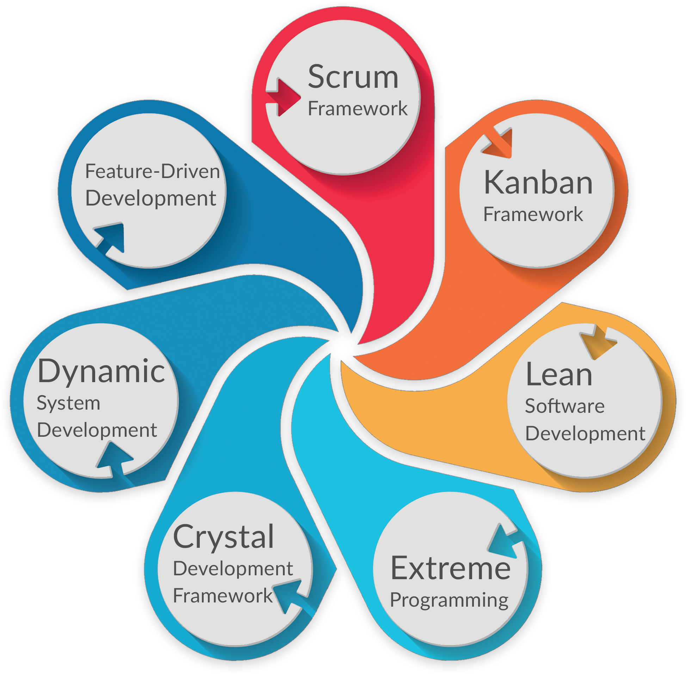
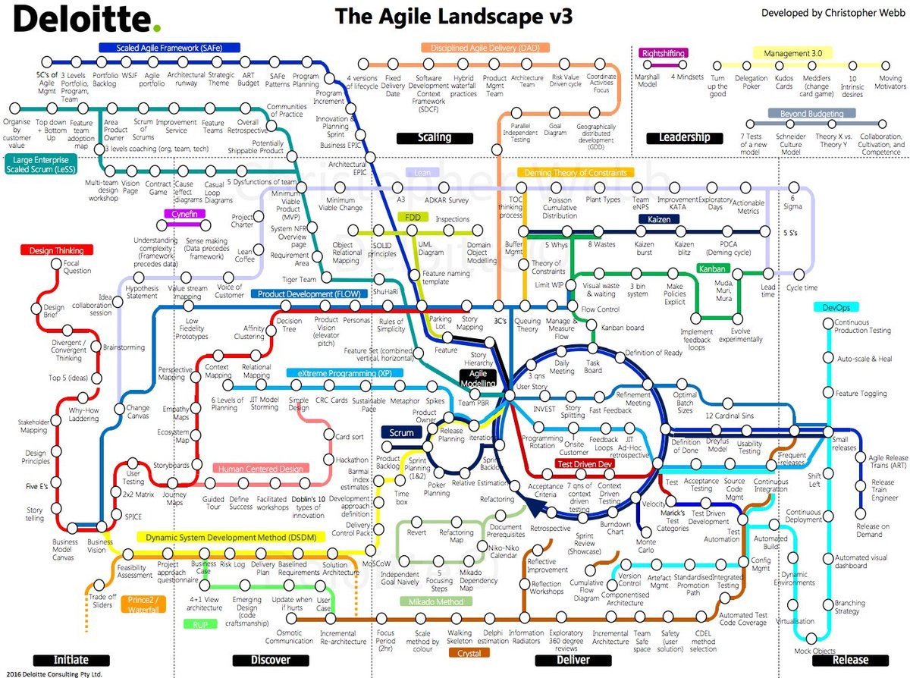
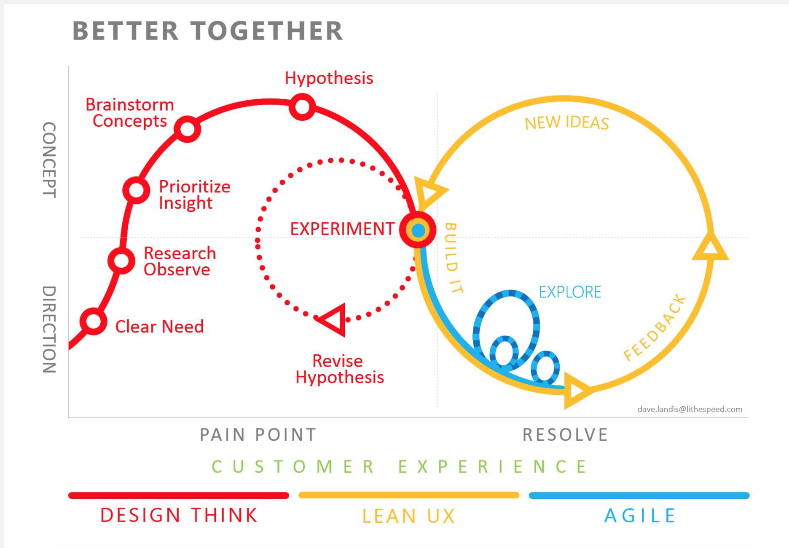

Scrum is boring
Design Thinking for Agile TeamsAgenda
- "We do scrum" = "We are agile"
- Design Thinking - do I need it?
- Agile with Design Thinking principles
- Excercise
Many recepies to be agile
... so, so many ...
AGILE
abilty to change
there is more ...
- manage complexity
- manage risk
- be transparent
- be predictable
.. but in the essence
DESIGN THINKING

.. but in the essence
Focus on people to creatively solve their problems
we are able to build it != we should
it will be fun to build it != we should
we will learn nech technology != we should
yes we SHOULD, but only if...
- Customers will find it useful ???
- ... it will pay off
- ... it is achievalble
How to combine agile + DT
How to use DT principles every day
Empathize
Define
Define user stories
Define hyphotesis
“We believe Kyma users would like to monitor logs next to the function's code.”
Iteration review
- what (and how much) we delivered
- whats the next thing we should deliver
- whats our velocity
... but also
- what the next thing we need to learn - state new hyphotesis
- how to quicly test hyphotesis - cheap (plan for experiments)
Ideate
with the whole team


Prototypes
Validate hyphotesis
... cheap
DON'T FALL IN
WITH YOUR PROTOTYPE
feedback - decision making
- "fact-based" - collect evidence, feedback
- - plan next step (... not 10 next steps)
- ..or change course - Agility
When are we done?
- Agile : Dod (implemented, tested, released, DONE!)... is user using it? is user happy?